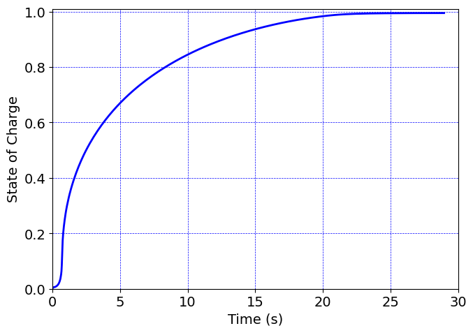

Code for Cahn-Hilliard phase separation with mechanical coupling#
This is a two-dimensional axisymmetric simulation
Slow ramp lithiation
Degrees of freedom#
mechanical dispalcement: u
chemical potential: mu
concentration: c
Units#
Length: um
Mass: kg
Time: s
Amount of substance: pmol
Temperature: K
Mass density: kg/um^3
Force: uN
Stress: MPa
Energy: pJ
Species concentration: pmol/um^3
Chemical potential: pJ/pmol
Molar volume: um^3/pmol
Species diffusivity: um^2/s
Boltzmann Constant: 1.38E-11 pJ/K
Gas constant: 8.3145 pJ/(pmol K)
Software:#
Dolfinx v0.8.0
Eric Stewart and Lallit Anand
ericstew@mit.edu and anand@mit.edu
June 2024
Import modules#
# Import FEnicSx/dolfinx
import dolfinx
# For numerical arrays
import numpy as np
# For MPI-based parallelization
from mpi4py import MPI
comm = MPI.COMM_WORLD
rank = comm.Get_rank()
# PETSc solvers
from petsc4py import PETSc
# specific functions from dolfinx modules
from dolfinx import fem, mesh, io, plot, log
from dolfinx.fem import (Constant, dirichletbc, Function, functionspace, Expression )
from dolfinx.fem.petsc import NonlinearProblem
from dolfinx.nls.petsc import NewtonSolver
from dolfinx.io import VTXWriter, XDMFFile
# specific functions from ufl modules
import ufl
from ufl import (TestFunctions, TrialFunction, Identity, grad, det, div, dev, inv, tr, sqrt, conditional ,\
lt, gt, dx, inner, derivative, dot, ln, split, exp, eq, cos, sin, acos, ge, le, outer, tanh,\
cosh, atan, atan2)
# basix finite elements (necessary for dolfinx v0.8.0)
import basix
from basix.ufl import element, mixed_element
# Matplotlib for plotting
import matplotlib.pyplot as plt
plt.close('all')
# For timing the code
from datetime import datetime
# Set level of detail for log messages (integer)
# Guide:
# CRITICAL = 50, // errors that may lead to data corruption
# ERROR = 40, // things that HAVE gone wrong
# WARNING = 30, // things that MAY go wrong later
# INFO = 20, // information of general interest (includes solver info)
# PROGRESS = 16, // what's happening (broadly)
# TRACE = 13, // what's happening (in detail)
# DBG = 10 // sundry
#
log.set_log_level(log.LogLevel.WARNING)
Define geometry#
# Ellipse major axis
a0 = 0.5 # um
# Ellipse minor axis
b0 = 0.3 #um
# Read in the 2D mesh and cell tags
with XDMFFile(MPI.COMM_WORLD,"meshes/axi_ellipse.xdmf",'r') as infile:
domain = infile.read_mesh(name="Grid",xpath="/Xdmf/Domain")
cell_tags = infile.read_meshtags(domain,name="Grid")
domain.topology.create_connectivity(domain.topology.dim, domain.topology.dim-1)
# Also read in 1D facets for applying BCs
with XDMFFile(MPI.COMM_WORLD,"meshes/facet_axi_ellipse.xdmf",'r') as infile:
facet_tags = infile.read_meshtags(domain,name="Grid")
# A single point at the center of the inclusion for "grounding" the displacement of the inclusion
def ground(x):
return np.logical_and(np.isclose(x[0], 0), np.isclose(x[1], 0))
x = ufl.SpatialCoordinate(domain)
Print out the unique cell number indices
top_imap = domain.topology.index_map(2) # index map of 2D entities in domain
values = np.zeros(top_imap.size_global) # an array of zeros of the same size as number of 2D entities
values[cell_tags.indices]=cell_tags.values # populating the array with facet tag index numbers
print(np.unique(cell_tags.values)) # printing the unique indices
# Gmsh numbering
# Physical Surface("particle", 8)
[8]
Print out the unique edge index numbers
top_imap = domain.topology.index_map(1) # index map of 1D entities in domain
values = np.zeros(top_imap.size_global) # an array of zeros of the same size as number of 2D entities
values[facet_tags.indices]=facet_tags.values # populating the array with facet tag index numbers
print(np.unique(facet_tags.values)) # printing the unique indices
# Curve labels from Gmsh
#
# //+
# Physical Curve("left", 5)
# //+
# Physical Curve("bottom", 6)
# //+
# Physical Curve("outer", 7)
[5 6 7]
Visualize the reference configuration
import pyvista
pyvista.set_jupyter_backend('html')
from dolfinx.plot import vtk_mesh
pyvista.start_xvfb()
# initialize a plotter
plotter = pyvista.Plotter()
# Add the mesh.
topology, cell_types, geometry = plot.vtk_mesh(domain, domain.topology.dim)
grid = pyvista.UnstructuredGrid(topology, cell_types, geometry)
plotter.add_mesh(grid, show_edges=True) #, opacity=0.25)
plotter.view_xy()
#labels = dict(xlabel='X', ylabel='Y',zlabel='Z')
labels = dict(xlabel='X', ylabel='Y')
plotter.add_axes(**labels)
plotter.screenshot("results/ellipse_mesh.png")
from IPython.display import Image
Image(filename='results/ellipse_mesh.png')
# # Use the following commands for a zoom-able view
# if not pyvista.OFF_SCREEN:
# plotter.show()
# else:
# plotter.screenshot("square_mesh.png")

Define boundary and volume integration measure#
# Define the boundary integration measure "ds" using the facet tags,
# also specify the number of surface quadrature points.
ds = ufl.Measure('ds', domain=domain, subdomain_data=facet_tags, metadata={'quadrature_degree':4})
# Define the volume integration measure "dx"
# also specify the number of volume quadrature points.
dx = ufl.Measure('dx', domain=domain, metadata={'quadrature_degree': 4})
# Create facet to cell connectivity required to determine boundary facets.
domain.topology.create_connectivity(domain.topology.dim, domain.topology.dim)
domain.topology.create_connectivity(domain.topology.dim, domain.topology.dim-1)
domain.topology.create_connectivity(domain.topology.dim-1, domain.topology.dim)
# # Define facet normal
n2D = ufl.FacetNormal(domain)
n = ufl.as_vector([n2D[0], n2D[1], 0.0]) # define n as a 3D vector for later use
Material parmeters#
# Material parameters after Di Leo et al. (2014)
#
Gshear = Constant(domain,PETSc.ScalarType(49.8e3*0.1)) # Shear modulus, MPa
Kbulk = Constant(domain,PETSc.ScalarType(83e3*0.1)) # Bulk modulus, MPa
#
Omega = Constant(domain,PETSc.ScalarType(4.05)) # Molar volume, um^3/pmol
D = Constant(domain,PETSc.ScalarType(1e-2)) # Diffusivity, um^2/s
chi = Constant(domain,PETSc.ScalarType(3)) # Phase parameter, (-)
cMax = Constant(domain,PETSc.ScalarType(2.29e-2)) # Saturation concentration, pmol/um^3
lam = Constant(domain,PETSc.ScalarType(5.5749e-1)) # Interface parameter, (pJ/pmol) um^2
#
theta0 = Constant(domain,PETSc.ScalarType(298)) # Reference temperature, K
R_gas = Constant(domain,PETSc.ScalarType(8.3145)) # Gas constant, pJ/(pmol K)
RT = Constant(domain,PETSc.ScalarType(R_gas*theta0))
Function spaces#
# Define function space, both vectorial and scalar
U2 = element("Lagrange", domain.basix_cell(), 2, shape=(2,)) # For displacement
P1 = element("Lagrange", domain.basix_cell(), 1) # Forchemical potential and species concentration
#
TH = mixed_element([U2, P1, P1]) # Mixed element
ME = functionspace(domain, TH) # Total space for all DOFs
# Define actual functions with the required DOFs
w = Function(ME)
u, mu, c = split(w) # chemical potential mu and concentration c
# A copy of functions to store values in the previous step for time-stepping
w_old = Function(ME)
u_old, mu_old, c_old = split(w_old)
# Define test functions
u_test, mu_test, c_test = TestFunctions(ME)
# Define trial functions needed for automatic differentiation
dw = TrialFunction(ME)
Initial conditions#
# Assign initial normalized chemical potential mu_i to the domain
w.sub(1).interpolate(lambda x: np.full((x.shape[1],), mu_i))
w_old.sub(1).interpolate(lambda x: np.full((x.shape[1],), mu_i))
# Assign initial normalized concentration c_i to the domain
c_i = Constant(domain, PETSc.ScalarType(cBar_i*cMax*Omega))
#
w.sub(2).interpolate(lambda x: np.full((x.shape[1],), c_i))
w_old.sub(2).interpolate(lambda x: np.full((x.shape[1],), c_i))
Subroutines for kinematics and constitutive equations#
# Special gradient operators for axisymmetric functions
#
#---------------------------------------------------
# Gradient of vector field u
#---------------------------------------------------
def axi_grad_vector(u):
grad_u = grad(u)
axi_grad_33_exp = conditional(eq(x[0], 0), 0.0, u[0]/x[0])
axi_grad_u = ufl.as_tensor([[grad_u[0,0], grad_u[0,1], 0],
[grad_u[1,0], grad_u[1,1], 0],
[0, 0, axi_grad_33_exp]])
return axi_grad_u
#---------------------------------------------------
# Gradient of scalar field y
# (just need an extra zero for dimensions to work out)
#---------------------------------------------------
def axi_grad_scalar(y):
grad_y = grad(y)
axi_grad_y = ufl.as_vector([grad_y[0], grad_y[1], 0.])
return axi_grad_y
#---------------------------------------------------
# Axisymmetric deformation gradient
#---------------------------------------------------
def F_axi_calc(u):
dim = len(u) # dimension of problem (2)
Id = Identity(dim) # 2D Identity tensor
F = Id + grad(u) # 2D Deformation gradient
F33_exp = 1.0 + u[0]/x[0] # axisymmetric F33, R/R0
F33 = conditional(eq(x[0], 0.0), 1.0, F33_exp) # avoid divide by zero at r=0
F_axi = ufl.as_tensor([[F[0,0], F[0,1], 0],
[F[1,0], F[1,1], 0],
[0, 0, F33]]) # Full axisymmetric F
return F_axi
# Elastic deformation gradient Fe
def Fe_calc(u,c):
F = F_axi_calc(u) # = F
J = det(F) # = J
#
Js = 1.0 + c # what about (c-c_i)?
Fs = Js**(1/3)*Identity(3)
#
Fe = F*inv(Fs)
return Fe
# The elastic second Piola stress
def Te_calc(u, c):
Id = Identity(3)
#
Fe = Fe_calc(u, c)
Je = det(Fe)
Ce = Fe.T*Fe
#
Cebar = Je**(-2/3)*Ce
#
Te = Je**(-2/3)*Gshear*(Id - (1/3)*tr(Cebar)*inv(Cebar))\
+ Kbulk*Je*(Je-1)*inv(Cebar)
#
return Te
# The elastic Mandel stress
def Me_calc(u, c):
Fe = Fe_calc(u, c)
Je = det(Fe)
Ce = Fe.T*Fe
#
Te = Te_calc(u, c)
#
Me = Ce*Te
#
return Me
# The first Piola stress
def Piola_calc(u,c):
#
F = F_axi_calc(u)
J = det(F)
#
Fe = Fe_calc(u, c)
Je = det(Fe)
#
Te = Te_calc(u,c)
#
T = Je**(-1)*Fe*Te*inv(Fe)
#
Piola = J*T*inv(F.T)/Gshear
return Piola
#------------------------------------------------------------------------------
# Species flux
def Flux_calc(u, mu, c):
F = F_axi_calc(u)
#
Cinv = inv(F.T*F)
#
cBar = c/(Omega*cMax) # normalized concentration
#
Mob = (D*c)/(Omega*RT)*(1-cBar)*Cinv
#
Jmat = - RT* Mob * axi_grad_scalar(mu)
#
return Jmat
# Calculate the f^c term
def fc_calc(u, c):
#
cBar = c/(Omega*cMax) # normalized concentration
#
Me = Me_calc(u,c)
#
fc = RT*(ln(cBar/(1-cBar)) + chi*(1-2*cBar) ) - Omega*((1/3)*tr(Me))
#
return fc
# Calculate principal Cauchy stresses for visualization only
def tensor_eigs(T):
# invariants of T
I1 = tr(T)
I2 = (1/2)*(tr(T)**2 - tr(T*T))
I3 = det(T)
# Intermediate quantities b, c, d
b = -I1
c = I2
d = -I3
# intermediate quantities E, F, G
E = (3*c - b*b)/3
F = (2*(b**3) - 9*b*c + 27*d)/27
G = (F**2)/4 + (E**3)/27
# Intermediate quantities H, I, J, K, L
H = sqrt(-(E**3)/27)
I = H**(1/3)
J = acos(-F/(2*H))
K = cos(J/3)
L = sqrt(3)*sin(J/3)
# Finally, the (not necessarily ordered) eigenvalues
t1 = 2*I*K - b/3
t2 = -I*(K+L) - b/3
t3 = -I*(K-L) - b/3
# Order the eigenvalues using conditionals
#
T1_temp = conditional(lt(t1, t3), t3, t1 ) # returns the larger of t1 and t3.
T1 = conditional(lt(T1_temp, t2), t2, T1_temp ) # returns the larger of T1_temp and t2.
#
T3_temp = conditional(gt(t3, t1), t1, t3 ) # returns the smaller of t1 and t3.
T3 = conditional(gt(T3_temp, t2), t2, T1_temp ) # returns the smaller of T3_temp and t2.
#
# use the trace to report the middle eigenvalue.
T2 = I1 - T1 - T3
return T1, T2, T3
Evaluate kinematics and constitutive relations#
# Kinematics
F = F_axi_calc(u)
J = det(F)
# Calculate the normalized concentration cBar
cBar = c/(Omega*cMax) # normalized concentration
# Calculate the Piola stress
Piola = Piola_calc(u,c)
# Calculate the Species flux
Jmat = Flux_calc(u, mu, c)
# Calculate the f^c term
fc = fc_calc(u, c)
Weak forms#
# Residuals:
# Res_0: Equation of motion (test fxn: u)
# Res_1: Balance of mass (test fxn: mu)
# Res_2: chemical potential (test fxn: c)
#
mu_ext_cons = Constant(domain,PETSc.ScalarType(muRamp(0)))
# Calculate the spatial species boundary flux:
j_spat_flux = mu - mu_ext_cons
#
Fcof = J*inv(F.T) # Cofactor of F
nvec = dot(Fcof,n) # Recall that we had defined: n = ufl.as_vector([n2D[0], n2D[1], 0.0])
da_mat = sqrt(inner(nvec, nvec)) # Areal jacobian
#
# Calculate the configuration-dependent referential spcies flux:
jBar = j_spat_flux * da_mat
# The weak form for the equation of motion
Res_0 = inner(Piola, axi_grad_vector(u_test))*x[0]*dx
# The weak form for the mass balance of mobile species
Res_1 = dot((c - c_old)/dk, mu_test)*x[0]*dx \
- Omega*dot(Jmat , axi_grad_scalar(mu_test) )*x[0]*dx \
+ Omega*dot(jBar, mu_test)*x[0]*ds(7)
# The weak form for the concentration
Res_2 = dot(mu - fc/RT, c_test)*x[0]*dx \
- dot( (lam/RT)*axi_grad_scalar(cBar), axi_grad_scalar(c_test))*x[0]*dx
# Total weak form
Res = Res_0 + Res_1 + Res_2
# Automatic differentiation tangent:
a = derivative(Res, w, dw)
Set-up output files#
# Set up projection problem for fixing visualization issues
# of fields in the axisymmetric simulation
#
def setup_projection(u, V):
trial = ufl.TrialFunction(V)
test = ufl.TestFunction(V)
a = ufl.inner(trial, test)*x[0]*dx
L = ufl.inner(u, test)*x[0]*dx
projection_problem = dolfinx.fem.petsc.LinearProblem(a, L, [], \
petsc_options={"ksp_type": "cg", "ksp_rtol": 1e-16, "ksp_atol": 1e-16, "ksp_max_it": 1000})
return projection_problem
# results file name
results_name = "axi_ellipse_lithiation_step_change_mod_factor=0.1"
# Function space for projection of results
U1 = element("DG", domain.basix_cell(), 1, shape=(2,)) # For 2d vector
P0 = element("DG", domain.basix_cell(), 1) # For scalar
T1 = element("DG", domain.basix_cell(), 1, shape=(3,3)) # For stress tensor
V1 = fem.functionspace(domain, P0) # Scalar function space
V2 = fem.functionspace(domain, U1) # Vector function space
V3 = fem.functionspace(domain, T1) # Tensor function space
# basic fields to write to output file
u_vis = Function(V2)
u_vis.name = "disp"
mu_vis = Function(V1)
mu_vis.name = "mu"
c_vis = Function(V1)
c_vis.name = "c"
# Project cBar for visualization
#
cBar_projection = setup_projection(cBar, V1)
cBar_vis = cBar_projection.solve()
cBar_vis.name = "cBar"
# Project the volumetric Jacobian J for visualization
#
J_projection = setup_projection(J, V1)
J_vis = J_projection.solve()
J_vis.name = "J"
# Project the Piola stress tensor for visualization
#
Piola_projection = setup_projection(Piola, V3)
Piola_temp = Piola_projection.solve()
T = Gshear*Piola_temp*F.T/J
T0 = T - (1/3)*tr(T)*Identity(3)
Mises = sqrt((3/2)*inner(T0, T0))
Mises_projection = setup_projection(Mises, V1)
Mises_vis = Mises_projection.solve()
Mises_vis.name = "Mises"
sig1, sig2, sig3 = tensor_eigs(T)
#
sig1_projection = setup_projection(sig1, V1)
sig1_vis = sig1_projection.solve()
sig1_vis.name = "sig1"
#
sig2_projection = setup_projection(sig2, V1)
sig2_vis = sig2_projection.solve()
sig2_vis.name = "sig2"
#
sig3_projection = setup_projection(sig3, V1)
sig3_vis = sig3_projection.solve()
sig3_vis.name = "sig3"
# #
# sig1_vis = Function(V1)
# sig1_vis.name = "sig1"
# sig1_expr = Expression(sig1, V1.element.interpolation_points())
# #
# sig2_vis = Function(V1)
# sig2_vis.name = "sig2"
# sig2_expr = Expression(sig2, V1.element.interpolation_points())
P11 = Function(V1)
P11.name = "P11"
P11_expr = Expression(Gshear*Piola_temp[0,0],V1.element.interpolation_points())
#
P22 = Function(V1)
P22.name = "P22"
P22_expr = Expression(Gshear*Piola_temp[1,1],V1.element.interpolation_points())
#
P33 = Function(V1)
P33.name = "P33"
P33_expr = Expression(Gshear*Piola_temp[2,2],V1.element.interpolation_points())
# set up the output VTX files.
file_results = VTXWriter(
MPI.COMM_WORLD,
"results/" + results_name + ".bp",
[ # put the functions here you wish to write to output
u_vis, mu_vis, c_vis, cBar_vis, J_vis,
P11, P22, P33, sig1_vis, sig2_vis, sig3_vis, Mises_vis,
],
engine="BP4",
)
def writeResults(t):
# Re-project some fields. This is necessary here to remove visual artifacts which arise
# due to the axisymmetric formulation as r -> 0
#
Piola_temp = Piola_projection.solve()
Mises_vis = Mises_projection.solve()
J_vis = J_projection.solve()
cBar_vis = cBar_projection.solve()
sig1_vis = sig1_projection.solve()
sig2_vis = sig2_projection.solve()
sig3_vis = sig3_projection.solve()
# Output field interpolation
u_vis.interpolate(w.sub(0))
mu_vis.interpolate(w.sub(1))
c_vis.interpolate(w.sub(2))
P11.interpolate(P11_expr)
P22.interpolate(P22_expr)
P33.interpolate(P33_expr)
# #
# sig1_vis.interpolate(sig1_expr)
# sig2_vis.interpolate(sig2_expr)
# Write output fields
file_results.write(t)
Infrastructure for pulling out time history data (displacement, force, etc.)#
# # Identify point for reporting temperature
# pointForDisp = np.array([r_out,L0/2,0.0])
# bb_tree = dolfinx.geometry.bb_tree(domain,domain.topology.dim)
# cell_candidates = dolfinx.geometry.compute_collisions_points(bb_tree, pointForDisp)
# colliding_cells = dolfinx.geometry.compute_colliding_cells(domain, cell_candidates, pointForDisp).array
# Form for evaluating the state of charge SOC at each step
# ( SOC = Tot_chg / Tot_vol )
#
Tot_chg = fem.form(2.0*np.pi* cBar *x[0]*dx)
#
Tot_vol = fem.form(2.0*np.pi*x[0]*dx)
# The (referential) volume is constant, so just evaluate it once before running the simulation:
#
Tot_vol_val = domain.comm.gather(fem.assemble_scalar(Tot_vol))[0]
Analysis Step#
# Give the step a descriptive name
step = "Lithiate"
Boundary conditions#
# Constant for applied chemical potential
mu_cons = Constant(domain,PETSc.ScalarType(muRamp(0)))
# Recall gmsh curve names and numbers
# Physical Curve("left", 5)
# //+
# Physical Curve("bottom", 6)
# //+
# Physical Curve("outer", 7)
# Find the specific DOFs which will be constrained
xBot_u1_dofs = fem.locate_dofs_topological(ME.sub(0).sub(0), facet_tags.dim, facet_tags.find(5))
yBot_u2_dofs = fem.locate_dofs_topological(ME.sub(0).sub(1), facet_tags.dim, facet_tags.find(6))
#
#outer_mu_dofs = fem.locate_dofs_topological(ME.sub(1), facet_tags.dim, facet_tags.find(7))
# Build Dirichlet BCs
bcs_1 = dirichletbc(0.0, xBot_u1_dofs, ME.sub(0).sub(0)) # u1 fix - left
bcs_2 = dirichletbc(0.0, yBot_u2_dofs, ME.sub(0).sub(1)) # u2 fix - bottom
#
bcs = [bcs_1,bcs_2]
Define the nonlinear variational problem#
# Set up nonlinear problem
problem = NonlinearProblem(Res, w, bcs, a)
# The global newton solver and params
solver = NewtonSolver(MPI.COMM_WORLD, problem)
solver.convergence_criterion = "incremental"
solver.rtol = 1e-8
solver.atol = 1e-8
solver.max_it = 50
solver.report = True
solver.error_on_nonconvergence = False
# The Krylov solver parameters.
ksp = solver.krylov_solver
opts = PETSc.Options()
option_prefix = ksp.getOptionsPrefix()
opts[f"{option_prefix}ksp_type"] = "preonly"
opts[f"{option_prefix}pc_type"] = "lu" # do not use 'gamg' pre-conditioner
opts[f"{option_prefix}pc_factor_mat_solver_type"] = "mumps"
opts[f"{option_prefix}ksp_max_it"] = 30
ksp.setFromOptions()
Initialize arrays for storing output history#
#Arrays for storing output history
totSteps = 100000
timeHist0 = np.zeros(shape=[totSteps])
timeHist1 = np.zeros(shape=[totSteps])
# # timeHist2 = np.zeros(shape=[totSteps])
# # timeHist3 = np.zeros(shape=[totSteps])
# # #
# # timeHist3[0] = mu0 # Initialize the chemical potential
# Initialize a counter for reporting data
ii = 0
# Write initial state to file
writeResults(t=0.0)
Start calculation loop#
print("------------------------------------")
print("Simulation start")
print("------------------------------------")
# Store start time
startTime = datetime.now()
# Time-stepping solution procedure loop
while (round(t, 9) <= Ttot):
# increment time
t += dt
# update time variables in time-dependent BCs
mu_ext_cons.value = float(muRamp(t))
# Solve the problem
(iter, converged) = solver.solve(w)
# Now we start the adaptive time-stepping and output storage procedure.
#
# First, we check if the newton solver actually converged.
if converged:
# Collect results from MPI ghost processes
w.x.scatter_forward()
# Write output to file
writeResults(t)
# If the solver converged, we print the status of the solver,
# perform adaptive time-stepping updates, output results, and
# update degrees of freedom for the next step, w_old <- w.
# print progress of calculation periodically
if ii%1 == 0:
now = datetime.now()
current_time = now.strftime("%H:%M:%S")
print("Step: {} | Increment: {} | Iterations: {}".format(step, ii, iter))
print("Simulation Time: {} s | dt: {} s".format(round(t,2), round(dt, 3)))
print()
# Iteration-based adaptive time-stepping
#
# If the newton solver takes 2 or less iterations,
# increase the time step by a factor of 1.5:
if ((iter<=4) and (dt<1)):
dt = 1.5*dt
dk.value = dt
# If the newton solver takes 5 or more iterations,
# decrease the time step by a factor of 2:
elif iter>=8:
dt = dt/2
dk.value = dt
# otherwise the newton solver took 3-4 iterations,
# in which case leave the time step alone.
# update the DOFs for the next step.
w_old.x.array[:] = w.x.array
# Increment counter
ii += 1
# Store time history variables
timeHist0[ii] = t # current time
timeHist1[ii] = domain.comm.gather(fem.assemble_scalar(Tot_chg))[0] / Tot_vol_val # time history of State of charge
# If solver doesn't converge we have to back up in time,
# cut the size of the time step, and try solving again.
else: # not(converged)
# first, we back up in time
# ( to un-do the current time step )
t = t - float(dk)
# Then, we cut back on the time step we're attempting.
# (by a factor of 2)
dt = dt/2
dk.value = dt
# Re-set the DOFs to their value before the failed step.
w.x.array[:] = w_old.x.array
# Set up nonlinear problem
problem = NonlinearProblem(Res, w, bcs, a)
# The global newton solver and params
solver = NewtonSolver(MPI.COMM_WORLD, problem)
solver.convergence_criterion = "incremental"
solver.rtol = 1e-8
solver.atol = 1e-8
solver.max_it = 50
solver.report = True
solver.error_on_nonconvergence = False
# close the output file.
file_results.close()
# End analysis
print("-----------------------------------------")
print("End computation")
# Report elapsed real time for the analysis
endTime = datetime.now()
elapseTime = endTime - startTime
print("------------------------------------------")
print("Elapsed real time: {}".format(elapseTime))
print("------------------------------------------")
------------------------------------
Simulation start
------------------------------------
Step: Lithiate | Increment: 0 | Iterations: 4
Simulation Time: 0.01 s | dt: 0.01 s
Step: Lithiate | Increment: 1 | Iterations: 4
Simulation Time: 0.03 s | dt: 0.015 s
Step: Lithiate | Increment: 2 | Iterations: 4
Simulation Time: 0.05 s | dt: 0.022 s
Step: Lithiate | Increment: 3 | Iterations: 4
Simulation Time: 0.08 s | dt: 0.034 s
Step: Lithiate | Increment: 4 | Iterations: 5
Simulation Time: 0.13 s | dt: 0.051 s
Step: Lithiate | Increment: 5 | Iterations: 5
Simulation Time: 0.18 s | dt: 0.051 s
Step: Lithiate | Increment: 6 | Iterations: 5
Simulation Time: 0.23 s | dt: 0.051 s
Step: Lithiate | Increment: 7 | Iterations: 5
Simulation Time: 0.28 s | dt: 0.051 s
Step: Lithiate | Increment: 8 | Iterations: 5
Simulation Time: 0.33 s | dt: 0.051 s
Step: Lithiate | Increment: 9 | Iterations: 5
Simulation Time: 0.39 s | dt: 0.051 s
Step: Lithiate | Increment: 10 | Iterations: 5
Simulation Time: 0.44 s | dt: 0.051 s
Step: Lithiate | Increment: 11 | Iterations: 5
Simulation Time: 0.49 s | dt: 0.051 s
Step: Lithiate | Increment: 12 | Iterations: 5
Simulation Time: 0.54 s | dt: 0.051 s
Step: Lithiate | Increment: 13 | Iterations: 5
Simulation Time: 0.59 s | dt: 0.051 s
Step: Lithiate | Increment: 14 | Iterations: 5
Simulation Time: 0.64 s | dt: 0.051 s
2024-06-20 21:44:21.853 ( 11.658s) [main ] NewtonSolver.cpp:270 WARN| Newton solver did not converge.
Step: Lithiate | Increment: 15 | Iterations: 5
Simulation Time: 0.66 s | dt: 0.025 s
Step: Lithiate | Increment: 16 | Iterations: 7
Simulation Time: 0.69 s | dt: 0.025 s
2024-06-20 21:44:24.229 ( 14.034s) [main ] NewtonSolver.cpp:270 WARN| Newton solver did not converge.
Step: Lithiate | Increment: 17 | Iterations: 6
Simulation Time: 0.7 s | dt: 0.013 s
Step: Lithiate | Increment: 18 | Iterations: 6
Simulation Time: 0.71 s | dt: 0.013 s
Step: Lithiate | Increment: 19 | Iterations: 6
Simulation Time: 0.73 s | dt: 0.013 s
Step: Lithiate | Increment: 20 | Iterations: 5
Simulation Time: 0.74 s | dt: 0.013 s
Step: Lithiate | Increment: 21 | Iterations: 5
Simulation Time: 0.75 s | dt: 0.013 s
Step: Lithiate | Increment: 22 | Iterations: 5
Simulation Time: 0.76 s | dt: 0.013 s
Step: Lithiate | Increment: 23 | Iterations: 5
Simulation Time: 0.78 s | dt: 0.013 s
Step: Lithiate | Increment: 24 | Iterations: 5
Simulation Time: 0.79 s | dt: 0.013 s
Step: Lithiate | Increment: 25 | Iterations: 4
Simulation Time: 0.8 s | dt: 0.013 s
Step: Lithiate | Increment: 26 | Iterations: 5
Simulation Time: 0.82 s | dt: 0.019 s
Step: Lithiate | Increment: 27 | Iterations: 4
Simulation Time: 0.84 s | dt: 0.019 s
Step: Lithiate | Increment: 28 | Iterations: 5
Simulation Time: 0.87 s | dt: 0.028 s
Step: Lithiate | Increment: 29 | Iterations: 5
Simulation Time: 0.9 s | dt: 0.028 s
Step: Lithiate | Increment: 30 | Iterations: 4
Simulation Time: 0.93 s | dt: 0.028 s
Step: Lithiate | Increment: 31 | Iterations: 5
Simulation Time: 0.97 s | dt: 0.043 s
Step: Lithiate | Increment: 32 | Iterations: 4
Simulation Time: 1.01 s | dt: 0.043 s
Step: Lithiate | Increment: 33 | Iterations: 5
Simulation Time: 1.08 s | dt: 0.064 s
Step: Lithiate | Increment: 34 | Iterations: 5
Simulation Time: 1.14 s | dt: 0.064 s
Step: Lithiate | Increment: 35 | Iterations: 5
Simulation Time: 1.2 s | dt: 0.064 s
Step: Lithiate | Increment: 36 | Iterations: 4
Simulation Time: 1.27 s | dt: 0.064 s
Step: Lithiate | Increment: 37 | Iterations: 5
Simulation Time: 1.36 s | dt: 0.096 s
Step: Lithiate | Increment: 38 | Iterations: 5
Simulation Time: 1.46 s | dt: 0.096 s
Step: Lithiate | Increment: 39 | Iterations: 5
Simulation Time: 1.56 s | dt: 0.096 s
Step: Lithiate | Increment: 40 | Iterations: 5
Simulation Time: 1.65 s | dt: 0.096 s
Step: Lithiate | Increment: 41 | Iterations: 5
Simulation Time: 1.75 s | dt: 0.096 s
Step: Lithiate | Increment: 42 | Iterations: 5
Simulation Time: 1.84 s | dt: 0.096 s
Step: Lithiate | Increment: 43 | Iterations: 5
Simulation Time: 1.94 s | dt: 0.096 s
Step: Lithiate | Increment: 44 | Iterations: 5
Simulation Time: 2.04 s | dt: 0.096 s
Step: Lithiate | Increment: 45 | Iterations: 5
Simulation Time: 2.13 s | dt: 0.096 s
Step: Lithiate | Increment: 46 | Iterations: 5
Simulation Time: 2.23 s | dt: 0.096 s
Step: Lithiate | Increment: 47 | Iterations: 4
Simulation Time: 2.32 s | dt: 0.096 s
Step: Lithiate | Increment: 48 | Iterations: 5
Simulation Time: 2.47 s | dt: 0.144 s
Step: Lithiate | Increment: 49 | Iterations: 5
Simulation Time: 2.61 s | dt: 0.144 s
Step: Lithiate | Increment: 50 | Iterations: 5
Simulation Time: 2.76 s | dt: 0.144 s
Step: Lithiate | Increment: 51 | Iterations: 5
Simulation Time: 2.9 s | dt: 0.144 s
Step: Lithiate | Increment: 52 | Iterations: 5
Simulation Time: 3.05 s | dt: 0.144 s
Step: Lithiate | Increment: 53 | Iterations: 5
Simulation Time: 3.19 s | dt: 0.144 s
Step: Lithiate | Increment: 54 | Iterations: 5
Simulation Time: 3.33 s | dt: 0.144 s
Step: Lithiate | Increment: 55 | Iterations: 5
Simulation Time: 3.48 s | dt: 0.144 s
Step: Lithiate | Increment: 56 | Iterations: 5
Simulation Time: 3.62 s | dt: 0.144 s
Step: Lithiate | Increment: 57 | Iterations: 5
Simulation Time: 3.77 s | dt: 0.144 s
Step: Lithiate | Increment: 58 | Iterations: 5
Simulation Time: 3.91 s | dt: 0.144 s
Step: Lithiate | Increment: 59 | Iterations: 5
Simulation Time: 4.05 s | dt: 0.144 s
Step: Lithiate | Increment: 60 | Iterations: 5
Simulation Time: 4.2 s | dt: 0.144 s
Step: Lithiate | Increment: 61 | Iterations: 5
Simulation Time: 4.34 s | dt: 0.144 s
Step: Lithiate | Increment: 62 | Iterations: 5
Simulation Time: 4.49 s | dt: 0.144 s
Step: Lithiate | Increment: 63 | Iterations: 5
Simulation Time: 4.63 s | dt: 0.144 s
Step: Lithiate | Increment: 64 | Iterations: 5
Simulation Time: 4.78 s | dt: 0.144 s
Step: Lithiate | Increment: 65 | Iterations: 5
Simulation Time: 4.92 s | dt: 0.144 s
Step: Lithiate | Increment: 66 | Iterations: 5
Simulation Time: 5.06 s | dt: 0.144 s
Step: Lithiate | Increment: 67 | Iterations: 5
Simulation Time: 5.21 s | dt: 0.144 s
Step: Lithiate | Increment: 68 | Iterations: 5
Simulation Time: 5.35 s | dt: 0.144 s
Step: Lithiate | Increment: 69 | Iterations: 5
Simulation Time: 5.5 s | dt: 0.144 s
Step: Lithiate | Increment: 70 | Iterations: 5
Simulation Time: 5.64 s | dt: 0.144 s
Step: Lithiate | Increment: 71 | Iterations: 5
Simulation Time: 5.78 s | dt: 0.144 s
Step: Lithiate | Increment: 72 | Iterations: 5
Simulation Time: 5.93 s | dt: 0.144 s
Step: Lithiate | Increment: 73 | Iterations: 5
Simulation Time: 6.07 s | dt: 0.144 s
Step: Lithiate | Increment: 74 | Iterations: 5
Simulation Time: 6.22 s | dt: 0.144 s
Step: Lithiate | Increment: 75 | Iterations: 5
Simulation Time: 6.36 s | dt: 0.144 s
Step: Lithiate | Increment: 76 | Iterations: 5
Simulation Time: 6.51 s | dt: 0.144 s
Step: Lithiate | Increment: 77 | Iterations: 5
Simulation Time: 6.65 s | dt: 0.144 s
Step: Lithiate | Increment: 78 | Iterations: 5
Simulation Time: 6.79 s | dt: 0.144 s
Step: Lithiate | Increment: 79 | Iterations: 5
Simulation Time: 6.94 s | dt: 0.144 s
Step: Lithiate | Increment: 80 | Iterations: 5
Simulation Time: 7.08 s | dt: 0.144 s
Step: Lithiate | Increment: 81 | Iterations: 5
Simulation Time: 7.23 s | dt: 0.144 s
Step: Lithiate | Increment: 82 | Iterations: 5
Simulation Time: 7.37 s | dt: 0.144 s
Step: Lithiate | Increment: 83 | Iterations: 5
Simulation Time: 7.51 s | dt: 0.144 s
Step: Lithiate | Increment: 84 | Iterations: 5
Simulation Time: 7.66 s | dt: 0.144 s
Step: Lithiate | Increment: 85 | Iterations: 5
Simulation Time: 7.8 s | dt: 0.144 s
Step: Lithiate | Increment: 86 | Iterations: 5
Simulation Time: 7.95 s | dt: 0.144 s
Step: Lithiate | Increment: 87 | Iterations: 5
Simulation Time: 8.09 s | dt: 0.144 s
Step: Lithiate | Increment: 88 | Iterations: 5
Simulation Time: 8.24 s | dt: 0.144 s
Step: Lithiate | Increment: 89 | Iterations: 5
Simulation Time: 8.38 s | dt: 0.144 s
Step: Lithiate | Increment: 90 | Iterations: 5
Simulation Time: 8.52 s | dt: 0.144 s
Step: Lithiate | Increment: 91 | Iterations: 5
Simulation Time: 8.67 s | dt: 0.144 s
Step: Lithiate | Increment: 92 | Iterations: 5
Simulation Time: 8.81 s | dt: 0.144 s
Step: Lithiate | Increment: 93 | Iterations: 5
Simulation Time: 8.96 s | dt: 0.144 s
Step: Lithiate | Increment: 94 | Iterations: 5
Simulation Time: 9.1 s | dt: 0.144 s
Step: Lithiate | Increment: 95 | Iterations: 5
Simulation Time: 9.24 s | dt: 0.144 s
Step: Lithiate | Increment: 96 | Iterations: 5
Simulation Time: 9.39 s | dt: 0.144 s
Step: Lithiate | Increment: 97 | Iterations: 5
Simulation Time: 9.53 s | dt: 0.144 s
Step: Lithiate | Increment: 98 | Iterations: 5
Simulation Time: 9.68 s | dt: 0.144 s
Step: Lithiate | Increment: 99 | Iterations: 5
Simulation Time: 9.82 s | dt: 0.144 s
Step: Lithiate | Increment: 100 | Iterations: 5
Simulation Time: 9.97 s | dt: 0.144 s
Step: Lithiate | Increment: 101 | Iterations: 5
Simulation Time: 10.11 s | dt: 0.144 s
Step: Lithiate | Increment: 102 | Iterations: 5
Simulation Time: 10.25 s | dt: 0.144 s
Step: Lithiate | Increment: 103 | Iterations: 5
Simulation Time: 10.4 s | dt: 0.144 s
Step: Lithiate | Increment: 104 | Iterations: 5
Simulation Time: 10.54 s | dt: 0.144 s
Step: Lithiate | Increment: 105 | Iterations: 5
Simulation Time: 10.69 s | dt: 0.144 s
Step: Lithiate | Increment: 106 | Iterations: 5
Simulation Time: 10.83 s | dt: 0.144 s
Step: Lithiate | Increment: 107 | Iterations: 5
Simulation Time: 10.97 s | dt: 0.144 s
Step: Lithiate | Increment: 108 | Iterations: 5
Simulation Time: 11.12 s | dt: 0.144 s
Step: Lithiate | Increment: 109 | Iterations: 5
Simulation Time: 11.26 s | dt: 0.144 s
Step: Lithiate | Increment: 110 | Iterations: 5
Simulation Time: 11.41 s | dt: 0.144 s
Step: Lithiate | Increment: 111 | Iterations: 5
Simulation Time: 11.55 s | dt: 0.144 s
Step: Lithiate | Increment: 112 | Iterations: 5
Simulation Time: 11.7 s | dt: 0.144 s
Step: Lithiate | Increment: 113 | Iterations: 5
Simulation Time: 11.84 s | dt: 0.144 s
Step: Lithiate | Increment: 114 | Iterations: 5
Simulation Time: 11.98 s | dt: 0.144 s
Step: Lithiate | Increment: 115 | Iterations: 5
Simulation Time: 12.13 s | dt: 0.144 s
Step: Lithiate | Increment: 116 | Iterations: 5
Simulation Time: 12.27 s | dt: 0.144 s
Step: Lithiate | Increment: 117 | Iterations: 5
Simulation Time: 12.42 s | dt: 0.144 s
Step: Lithiate | Increment: 118 | Iterations: 5
Simulation Time: 12.56 s | dt: 0.144 s
Step: Lithiate | Increment: 119 | Iterations: 5
Simulation Time: 12.7 s | dt: 0.144 s
Step: Lithiate | Increment: 120 | Iterations: 5
Simulation Time: 12.85 s | dt: 0.144 s
Step: Lithiate | Increment: 121 | Iterations: 5
Simulation Time: 12.99 s | dt: 0.144 s
Step: Lithiate | Increment: 122 | Iterations: 5
Simulation Time: 13.14 s | dt: 0.144 s
Step: Lithiate | Increment: 123 | Iterations: 5
Simulation Time: 13.28 s | dt: 0.144 s
Step: Lithiate | Increment: 124 | Iterations: 5
Simulation Time: 13.43 s | dt: 0.144 s
Step: Lithiate | Increment: 125 | Iterations: 5
Simulation Time: 13.57 s | dt: 0.144 s
Step: Lithiate | Increment: 126 | Iterations: 5
Simulation Time: 13.71 s | dt: 0.144 s
Step: Lithiate | Increment: 127 | Iterations: 5
Simulation Time: 13.86 s | dt: 0.144 s
Step: Lithiate | Increment: 128 | Iterations: 5
Simulation Time: 14.0 s | dt: 0.144 s
Step: Lithiate | Increment: 129 | Iterations: 5
Simulation Time: 14.15 s | dt: 0.144 s
Step: Lithiate | Increment: 130 | Iterations: 5
Simulation Time: 14.29 s | dt: 0.144 s
Step: Lithiate | Increment: 131 | Iterations: 5
Simulation Time: 14.43 s | dt: 0.144 s
Step: Lithiate | Increment: 132 | Iterations: 5
Simulation Time: 14.58 s | dt: 0.144 s
Step: Lithiate | Increment: 133 | Iterations: 5
Simulation Time: 14.72 s | dt: 0.144 s
Step: Lithiate | Increment: 134 | Iterations: 5
Simulation Time: 14.87 s | dt: 0.144 s
Step: Lithiate | Increment: 135 | Iterations: 5
Simulation Time: 15.01 s | dt: 0.144 s
Step: Lithiate | Increment: 136 | Iterations: 5
Simulation Time: 15.16 s | dt: 0.144 s
Step: Lithiate | Increment: 137 | Iterations: 5
Simulation Time: 15.3 s | dt: 0.144 s
Step: Lithiate | Increment: 138 | Iterations: 5
Simulation Time: 15.44 s | dt: 0.144 s
Step: Lithiate | Increment: 139 | Iterations: 5
Simulation Time: 15.59 s | dt: 0.144 s
Step: Lithiate | Increment: 140 | Iterations: 5
Simulation Time: 15.73 s | dt: 0.144 s
Step: Lithiate | Increment: 141 | Iterations: 5
Simulation Time: 15.88 s | dt: 0.144 s
Step: Lithiate | Increment: 142 | Iterations: 5
Simulation Time: 16.02 s | dt: 0.144 s
Step: Lithiate | Increment: 143 | Iterations: 5
Simulation Time: 16.16 s | dt: 0.144 s
Step: Lithiate | Increment: 144 | Iterations: 5
Simulation Time: 16.31 s | dt: 0.144 s
Step: Lithiate | Increment: 145 | Iterations: 5
Simulation Time: 16.45 s | dt: 0.144 s
Step: Lithiate | Increment: 146 | Iterations: 5
Simulation Time: 16.6 s | dt: 0.144 s
Step: Lithiate | Increment: 147 | Iterations: 5
Simulation Time: 16.74 s | dt: 0.144 s
Step: Lithiate | Increment: 148 | Iterations: 5
Simulation Time: 16.89 s | dt: 0.144 s
Step: Lithiate | Increment: 149 | Iterations: 5
Simulation Time: 17.03 s | dt: 0.144 s
Step: Lithiate | Increment: 150 | Iterations: 5
Simulation Time: 17.17 s | dt: 0.144 s
Step: Lithiate | Increment: 151 | Iterations: 5
Simulation Time: 17.32 s | dt: 0.144 s
Step: Lithiate | Increment: 152 | Iterations: 5
Simulation Time: 17.46 s | dt: 0.144 s
Step: Lithiate | Increment: 153 | Iterations: 5
Simulation Time: 17.61 s | dt: 0.144 s
Step: Lithiate | Increment: 154 | Iterations: 5
Simulation Time: 17.75 s | dt: 0.144 s
Step: Lithiate | Increment: 155 | Iterations: 5
Simulation Time: 17.89 s | dt: 0.144 s
Step: Lithiate | Increment: 156 | Iterations: 5
Simulation Time: 18.04 s | dt: 0.144 s
Step: Lithiate | Increment: 157 | Iterations: 5
Simulation Time: 18.18 s | dt: 0.144 s
Step: Lithiate | Increment: 158 | Iterations: 5
Simulation Time: 18.33 s | dt: 0.144 s
Step: Lithiate | Increment: 159 | Iterations: 5
Simulation Time: 18.47 s | dt: 0.144 s
Step: Lithiate | Increment: 160 | Iterations: 5
Simulation Time: 18.62 s | dt: 0.144 s
Step: Lithiate | Increment: 161 | Iterations: 5
Simulation Time: 18.76 s | dt: 0.144 s
Step: Lithiate | Increment: 162 | Iterations: 5
Simulation Time: 18.9 s | dt: 0.144 s
Step: Lithiate | Increment: 163 | Iterations: 5
Simulation Time: 19.05 s | dt: 0.144 s
Step: Lithiate | Increment: 164 | Iterations: 5
Simulation Time: 19.19 s | dt: 0.144 s
Step: Lithiate | Increment: 165 | Iterations: 5
Simulation Time: 19.34 s | dt: 0.144 s
Step: Lithiate | Increment: 166 | Iterations: 5
Simulation Time: 19.48 s | dt: 0.144 s
Step: Lithiate | Increment: 167 | Iterations: 5
Simulation Time: 19.62 s | dt: 0.144 s
Step: Lithiate | Increment: 168 | Iterations: 5
Simulation Time: 19.77 s | dt: 0.144 s
Step: Lithiate | Increment: 169 | Iterations: 6
Simulation Time: 19.91 s | dt: 0.144 s
Step: Lithiate | Increment: 170 | Iterations: 5
Simulation Time: 20.06 s | dt: 0.144 s
Step: Lithiate | Increment: 171 | Iterations: 6
Simulation Time: 20.2 s | dt: 0.144 s
Step: Lithiate | Increment: 172 | Iterations: 5
Simulation Time: 20.35 s | dt: 0.144 s
Step: Lithiate | Increment: 173 | Iterations: 5
Simulation Time: 20.49 s | dt: 0.144 s
Step: Lithiate | Increment: 174 | Iterations: 4
Simulation Time: 20.63 s | dt: 0.144 s
Step: Lithiate | Increment: 175 | Iterations: 4
Simulation Time: 20.85 s | dt: 0.216 s
Step: Lithiate | Increment: 176 | Iterations: 4
Simulation Time: 21.17 s | dt: 0.324 s
Step: Lithiate | Increment: 177 | Iterations: 4
Simulation Time: 21.66 s | dt: 0.487 s
Step: Lithiate | Increment: 178 | Iterations: 4
Simulation Time: 22.39 s | dt: 0.73 s
Step: Lithiate | Increment: 179 | Iterations: 4
Simulation Time: 23.49 s | dt: 1.095 s
Step: Lithiate | Increment: 180 | Iterations: 4
Simulation Time: 24.58 s | dt: 1.095 s
Step: Lithiate | Increment: 181 | Iterations: 4
Simulation Time: 25.67 s | dt: 1.095 s
Step: Lithiate | Increment: 182 | Iterations: 4
Simulation Time: 26.77 s | dt: 1.095 s
Step: Lithiate | Increment: 183 | Iterations: 4
Simulation Time: 27.86 s | dt: 1.095 s
Step: Lithiate | Increment: 184 | Iterations: 4
Simulation Time: 28.96 s | dt: 1.095 s
Step: Lithiate | Increment: 185 | Iterations: 3
Simulation Time: 30.05 s | dt: 1.095 s
-----------------------------------------
End computation
------------------------------------------
Elapsed real time: 0:01:14.049362
------------------------------------------
# set plot font to size 14
font = {'size' : 14}
plt.rc('font', **font)
# Only plot as far as we have time history data
ind = np.argmax(timeHist0)
# Get array of default plot colors
prop_cycle = plt.rcParams['axes.prop_cycle']
colors = prop_cycle.by_key()['color']
plt.figure()
plt.plot(timeHist0[0:ind], timeHist1[0:ind], linewidth=2.0,\
# color='r', marker='o', markersize=3)
color='b')
plt.axis('tight')
plt.ylabel(r"State of Charge")
plt.xlabel(r"Time (s)")
plt.grid(linestyle="--", linewidth=0.5, color='b')
plt.ylim(0,1.01)
plt.xlim(0,30)
fig = plt.gcf()
fig.set_size_inches(7,5)
plt.tight_layout()
plt.savefig("results/ellipse_lithiation_step_change_mod_factor=0.1.png", dpi=600)
